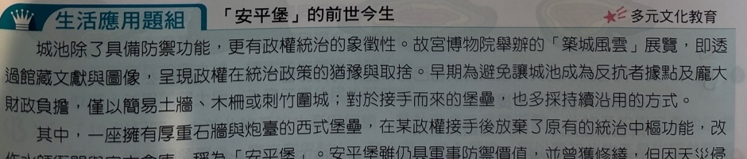
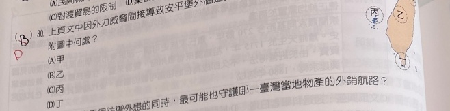
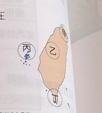

【原卷可讀片段，尚未完整】 城池除了具備防禦功能，更有政權統治的象徵性。故宮博物院舉辦的「築城風雲」展覽，即透過館藏文獻與圖像，呈現政權在統治政策的猶豫與取捨。早期為避免讓城池成為反抗者據點及龐大財政負擔，僅以簡易土牆、木柵或刺竹圍城；對於接手而來的堡壘，也多採持續沿用的方式。 其中，一座擁有厚重石牆與炮臺的西式堡壘，在某政權接手後放棄了原有的統治中樞功能，改…… 【照片下緣截斷，缺少後文，待補。】
上頁文中因外力威脅間接導致安平堡外牆遭拆解，該外力最可能發生在附圖中何處？
(A) 甲 (B) 乙 (C) 丙 (D) 丁
保留可讀題幹選項、必要位置圖與原卷紅筆D，缺漏文章明標待補，不當完整題收入。


